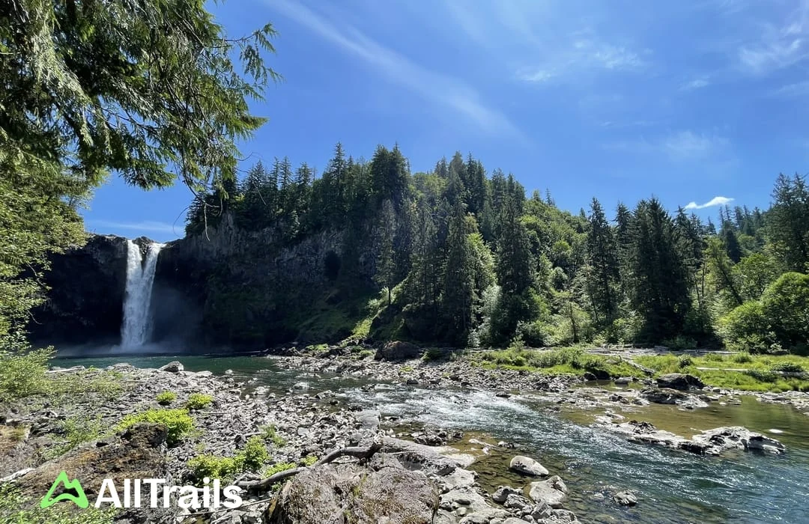

Thu
Thursday
DinnerChicken quesadillas
July 16–18, 2026 · Washington
Three easy days of shared meals, waterfalls, lavender fields, and a relaxed send-off.



First: food
Options for the visit
Franklin balances trail time and scenery. Snoqualmie is the iconic view. Paradise is the gentlest option. Drive estimates start from home.
Balanced pick
Snoqualmie Pass
A shaded river walk with a memorable waterfall finish.
Family fit Toddler can walk sections; bring a carry backup.
Know before Stop at the main viewpoint—the final rocks are wet and narrow.
Snoqualmie
Washington’s famous 268-foot waterfall with an instant upper overlook.
Family fit Easy overlook; carry backup for the steep return.
Know before Stay on the trail, boardwalk, and fenced overlooks.
Easiest
Paradise Valley · Woodinville
A gentle forest loop with minimal climbing and an easy bailout.
Family fit Best chance the three-year-old walks the whole route.
Know before No dramatic endpoint, but shaded, calm, and close.
After the hike
Farm name TBD. The Friday pickup window leaves room after the hike and lunch.
Exact farm location and pickup timing are still TBD.
JB Family Growers · Festival weekend one. Arrive at opening, enjoy the fields, then head home to pack.
Festival details ↗Arrives DFW at 9:24 p.m. local. If the festival runs long, head home rather than compress the airport buffer.